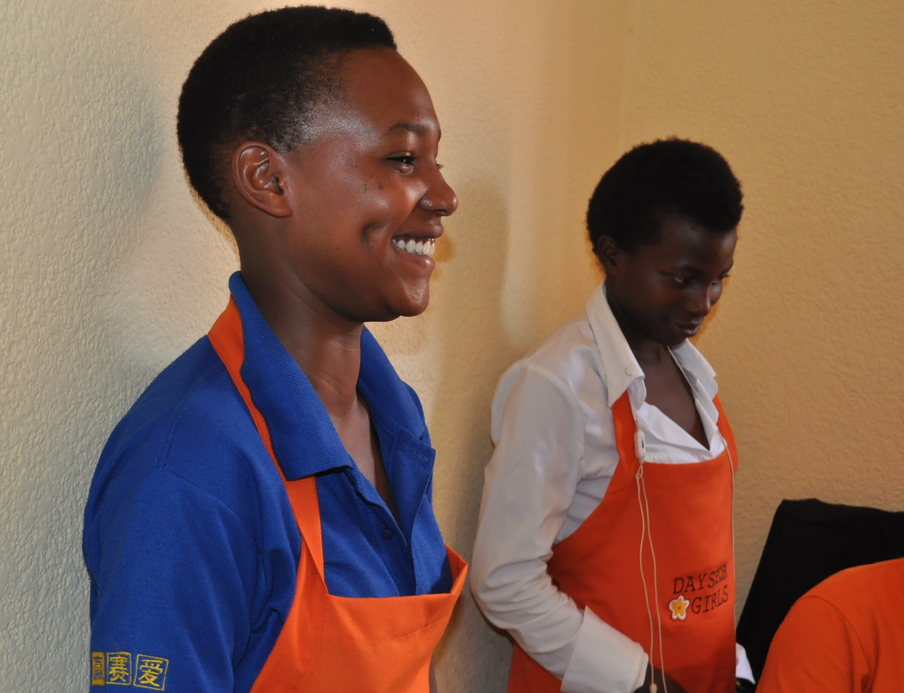
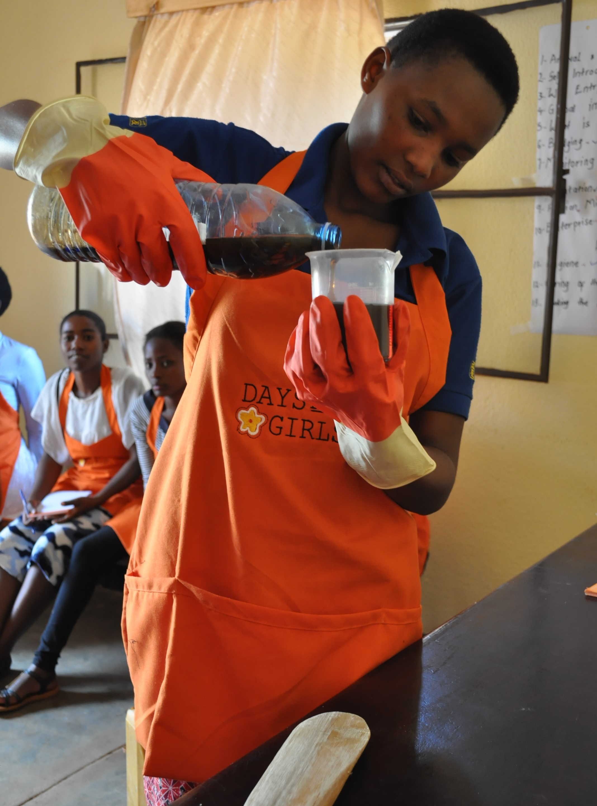

The Days for Girls Spark's Gift Enterprise started in September 2018 and is located in Muhondo, Rwanda. During a two-week training with two trainers from Days for Girls Uganda, the young women learned how to sew the DfG Kits and how to make both liquid and bar soap. The girls also learned about creating a business, managing finances, and marketing their products & services. All of the girls because certified Ambassadors of Women's Health, allowing them to train other girls and women about sexual & reproductive health, menstruation hygiene, sexual assault, human trafficking, and self-defense. For more information about Days for Girls and their reusable menstrual hygiene kits please visit their website.
The Enterprise is currently seeking S-Mark Certification from the Rwandan Standards Board before selling their products within Muhondo Sector and surrounding areas. Once all approvals have been secured, the DfG Kits and soap will be available at the Enterprise office at the Muhondo Health Center as well as for delivery upon request.
If you are interested in placing an order for their products or you would like to hire a trainer to teach the women's health course, please contact info@sparkintl.org. The pricing information for the kits and trainings can be found here. Please note that all DfG Kits Distributions must be accompanied by the Ambassadors of Women's Health course to ensure proper kit maintenance and menstral hygiene management.
Check out our blog to learn more about the Enterprise members and to see pictures of them hard at work!

Spark Initiative's Gender Consultant, Aimee Carlson, is passionate about fighting for gender equality around the world and has been working in the field for the past four years. She is particularly experienced in youth centered programming for both genders in rural areas as well as the refugee context. Additionally, as a Returned Peace Corps Volunteer, Aimee is skilled at working in a low-resource environment and across different cultures.
If you are looking for a gender consultant for any of the following services or would like to request a CV or references, please contact Aimee at aimee@sparkintl.org or +250 787 956 635.